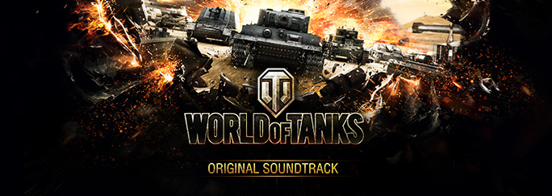

World of Tanks Battle Music
Creator
Name: Freewheeler
Twitter:
@Freewheeler_
Mod Information
ID: sfx.bgm.pc_music
Description: World of Tanks Battle Music.
© 2009–2017 Wargaming.net 2013 Wargaming.net LLP. All rights reserved.
Sample Image

Sample Misic